テーブルの結合
関係データベースの最大の魅力は「データに矛盾が発生しない」ような設計が可能であることです。
その為に、１事実１箇所(1 fact, 1 place)を徹底する必要がありますが、このために重複する部分を複数のテーブルで管理します。
このように、データに矛盾を発生さないようにテーブルを分割する作業を「正規化」と呼びます。
しかしながら、実際には分割されたテーブルでは不便なケースもあります。
テーブルの結合は、このように正規化されたテーブルを適時結合する処理を言います。
テーブルの結合には正規化の考えと密接にかかわっていますが、正規化・データベース設計に関しては後ほど説明するため、ここでは分割されたテーブルをある条件を元に、結合させる作業と考えてください。
※ このページでも簡単な正規化については説明します。
正規化の必要性
最初に正規化する必要性について説明します。
以下のテーブルをみて下さい。
自分がゲットしたポケモンを管理するテーブルです。
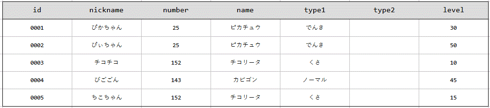
上のテーブルも問題点が分かりますか???
上のテーブルでは「図鑑番号」から「名前」「タイプ」を特定できるのにもかかわらず、それを重複して管理している点です。
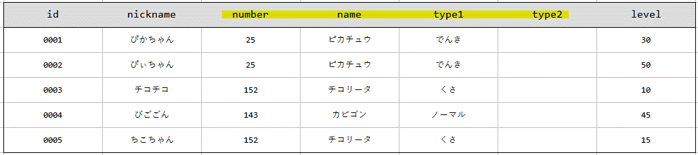
「ぴぃちゃん(0002)」が進化してライチュウになったとします。
以下のSQLを実行してデータベースを更新したとします。
UPDATE my_poke
SET name = 'ライチュウ'
WHERE id = 0002;
以下のテーブルに更新されます。
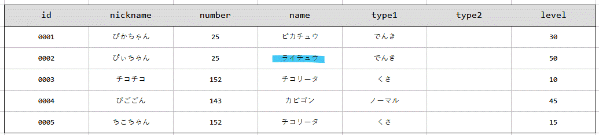
図鑑番号は「25」で「ライチュウ」という矛盾が発生してしまいます。
図鑑番号も正しく更新すれば矛盾は防げますが、理論上矛盾が発生しうるという状態そのものが問題であり、設計時にこのような問題を防ぐために正規化(テーブルの適切な分割)を行います。
今回は以下のようにテーブルを分割します。
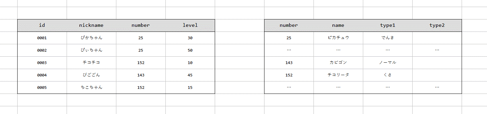
自分がゲットしたポケモンテーブルとポケモン図鑑テーブルを分離させることで理論上、矛盾が発生しない設計となりました！
結合の種類
テーブルの結合の種類は大きく以下の3通りに分類されます。
- 内部結合
- 外部結合
- クロス結合
簡単に説明します。
| 結合の種類 | 説明 |
|---|---|
| 内部結合 | 結合対象テーブル両方に存在するデータを抽出。 |
| 外部結合 | 結合対象テーブルのうち、基準となるテーブルに存在するデータを抽出。 |
| クロス結合 | 結合対象テーブル両方の全てのパターンを組み合わせる結合です。 普段用いることはありません。 |
では、自分がゲットしたポケモンを管理するための「my_poke」テーブルを作成します。
CREATE TABLE my_poke(
id CHAR(4) PRIMARY KEY,
nickname NVARCHAR(50) NOT NULL,
number INT NULL,
level INT CHECK(1 <= level AND level <= 100)
);
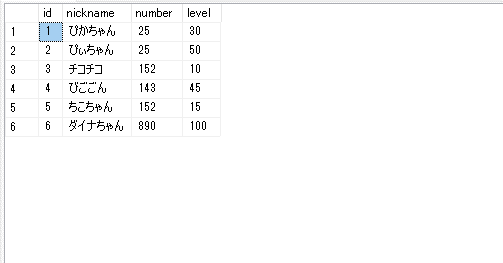
結合の基本的な考え方
テーブルの結合は結合対象のテーブル(A・B)に対して、一定の条件から横に結合します。
一般的にはAに存在する指定した列の値と、Bに存在する指定した列の値が一致するように結合します。
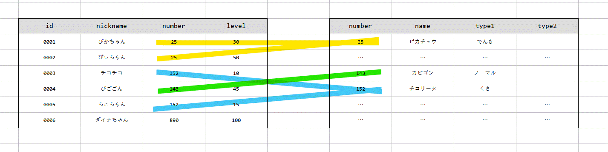
問題となるのは、結合条件と設定した列がもう片方に存在しない、ないしはNULLが登録されている場合です。
内部結合
結合対象テーブル両方に存在するデータを抽出します。
今回は自分がゲットしたポケモンとポケモン図鑑は図鑑番号をもとに結合できますが、ダイナちゃん(ムゲンダイナ)は第七世代のポケモンであるためポケモン図鑑テーブルに登録されていません。
この状態で内部結合を行います。
SELECT *
FROM my_poke
INNER JOIN pokemon
ON my_poke.number = pokemon.number;
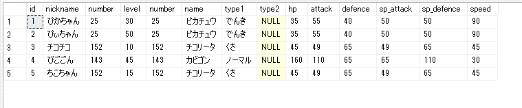
ダイナちゃんは無視されていることが確認できます。
このようにどちらか一方にしか存在しない行は内部結合では取得されません。
ダイナちゃんとnumberがNULLの場合も同様です。
内部結合は以下のように書きます。
SELECT *
FROM テーブル名
INNER JOIN 結合対象テーブル
ON テーブル名.結合条件列 = 結合対象テーブル.結合条件列;
外部結合
結合対象テーブルのうち、基準となるテーブルに存在するデータを抽出します。
外部結合はさらに以下の3通りに分類されます。
- 左外部結合
- 右外部結合
- 完全外部結合
左外部結合
左側(FROM句の対象)のテーブルにしか存在しないデータも表示します。
以下のように書きます。
SELECT *
FROM テーブル名(左)
LEFT OUTER JOIN テーブル名(右)
ON テーブル名.結合条件列 = テーブル名.結合条件列;
では、先ほどのデータを対象に左外部結合した結果を取得しましょう♪
SELECT *
FROM my_poke
LEFT OUTER JOIN pokemon
ON my_poke.number = pokemon.number;
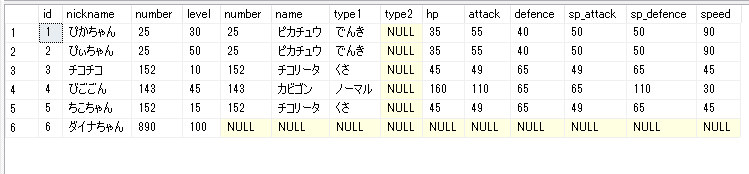
右側(ポケモン図鑑)に存在しないダイナちゃんも取得されています。
欠損しているデータはNULLとなります。
結合条件を満たす行が結合対象先に複数存在する場合には当該行はその数だけ表示されます。
右外部結合
右側(JOIN句の対象)のテーブルにしか存在しないデータも表示します。
以下のように書きます。
SELECT *
FROM テーブル名(左)
RIGHT OUTER JOIN テーブル名(右)
ON テーブル名.結合条件列 = テーブル名.結合条件列;
では、右外部結合を実行してみましょう♪
SELECT *
FROM my_poke
RIGHT OUTER JOIN pokemon
ON my_poke.number = pokemon.number;
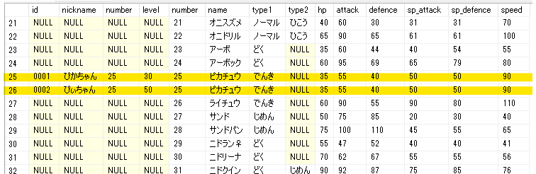
今回は条件を満たす行が結合対象先に複数存在する行がその数だけ表示されていることが確認できます。
※ 「25: ピカチュウ」の行です。
一般的には右外部結合は使用しません。
FROM句とJOIN句のテーブルを入れ替えることで対応することが多いです。
今回の場合は以下のように書きます。
SELECT *
FROM pokemon
LEFT OUTER JOIN my_poke
ON pokemon.number = my_poke.number;
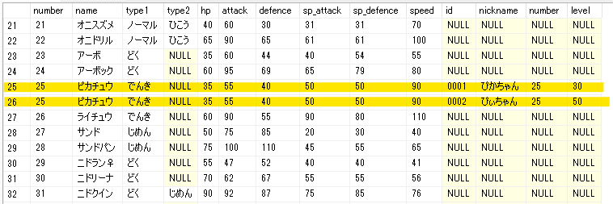
完全外部結合
「左外部結合」+「右外部結合」です。
どちらか一方にしか存在しない行を全て取得します。
SELECT *
FROM テーブル名(左)
FULL OUTER JOIN テーブル名(右)
ON テーブル名.結合条件列 = テーブル名.結合条件列;
SELECT *
FROM pokemon
FULL OUTER JOIN my_poke
ON pokemon.number = my_poke.number;
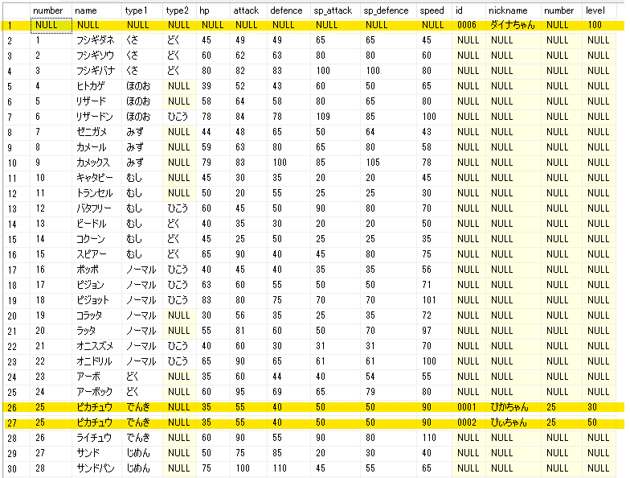
クロス結合
使うことはほとんどありません。
両テーブルの全ての行に対して全ての組み合わせパターンを取得します。
以下のように書きます。
SELECT *
FROM テーブル1, テーブル2;
以下のようにクロス結合を分かりやすく書くこともできます。
SELECT *
FROM テーブル名
CROSS JOIN 結合対象テーブル;
自然結合
結合の種類ではありませんが、それ以外にも自然結合があります。
これはカラム名によって自動的に結合条件を設定する結合を言います。
上のケースでは結合条件列としてnumber列が同じであることを設定しました。
自然結合は結合するテーブル同士で同じ名前の列をすべて等しい条件として自動で設定します。
SELECT *
FROM テーブル名
NATURAL INNER JOIN 結合対象テーブル;
間違って両テーブルにおいて、意味が異なる同名の列が設定されていると誤作動を起こします。
SQL Serverでは使用できません。